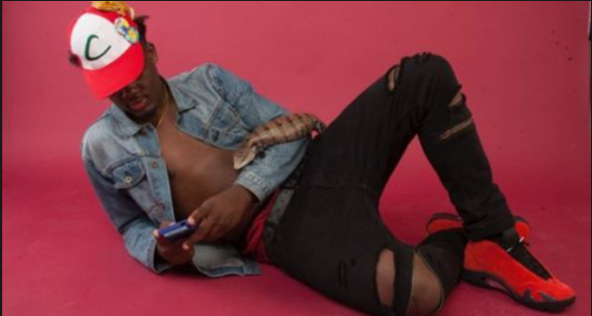

Latest Release

Ran It Up Again
OCT 28, 2017
Popular
Albums
Bio
Lyrically crude and rhythmically sluggish, Ugly God is a rapper and producer who broke out during the latter half of the 2010s. Born in Indiana, he has lived in other areas of the Midwest, as well as the South, including Texas, Mississippi, and Louisiana. He attended the University of Southern Mississippi and dropped out, subsequently forming the Little Dick Clique and releasing material -- such as "Booty from a Distance" and "I Beat My Meat" -- through a SoundCloud page. In 2016, one of the more successful tracks, "Water," was picked up for release by major-label Asylum. By the end of the year, the single made Billboard's Spotify Velocity and Spotify Viral 50 charts. Ugly God issued his full-length Asylum debut, The Booty Tape, in 2017. The mixtape climbed into the Top 30 of the Billboard 200. ~ Andy Kellman, Rovi
2,542,347
Monthly Listeners
445,020
Followers